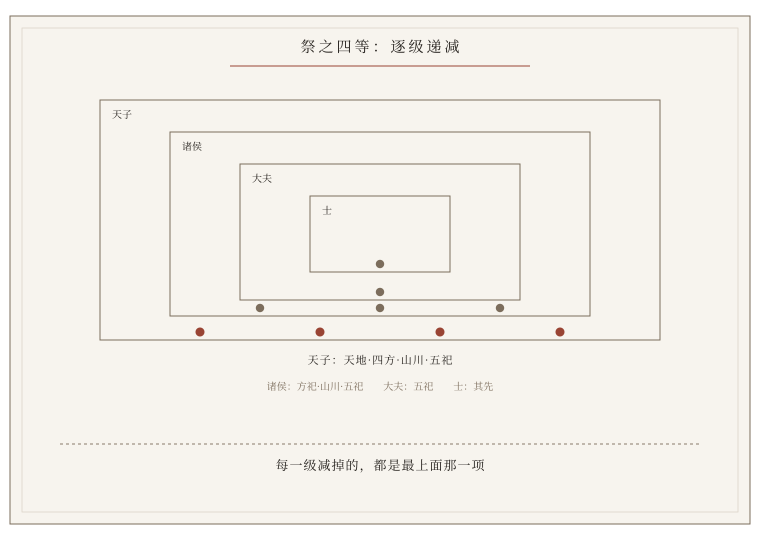

曲礼下 · 二·六十六 · 第 189 课
天子祭天地、四方、山川、五祀，岁遍；诸侯方祀、山川、五祀，岁遍；大夫五祀，岁遍；士祭其先。注「此盖殷时制也」，《祭法》所载则周制。
说什么事：四等祭祀的等差，与殷周两制之别。
落在哪一层：礼，兼及礼制沿革。既是等差，也是制度史。
为何编在此位：上数节论问对之辞，此节转入祭。由言及事。
【经】天子祭天地，祭四方，祭山川，祭五祀，歲遍。諸侯方祀，祭山川，祭五祀，歲遍。大夫祭五祀，歲遍。士祭其先。
【注】祭四方，謂祭五官之神於四郊也。句芒在東，祝融后土在南，蓐收在西，玄冥在北。《詩》云「來方禋祀」，方祀者，各祭其方之官而已。五祀，戶、灶、中霤、門、行也。此蓋殷時制也。《祭法》曰天子立七祀，諸侯立五祀，大夫立三祀，士立二祀，謂周制也。
【疏】此一节总明祭祀功业多少之差。天子祭天地者，谓四时迎气，祭五天帝于四郊，各以当方人帝配之。《月令》春曰其帝太皞，夏曰其帝炎帝，季夏曰其帝黄帝，秋曰其帝少皞，冬曰其帝颛顼。又《礼运》云：「祭帝于郊，所以定天位。」又《大传》云「礼不王不禘，王者禘其祖之所自出，以其祖配之」，谓冬至祭所感生帝于南郊。夏正郊天，祭所感生帝，以后稷配。雩祭，总祭五帝于明堂，以文王、武王配。方丘之神，则昆仑也，《地统书·括地象》云「地中央曰昆仑」。诸侯方祀者，诸侯既不得祭天地，又不得总祭五方，唯当祀所当方。云「祭山川」者，《王制》云「在其地则祭之，亡其地则不祭」是也。「大夫祭五祀」者，取《月令》户、灶、中霤、门、行，非《大宗伯》五官之神。此云「岁遍」者，谓四时各祭之，故云遍也。此殷制无差等，故郑云「此盖殷时制也」。案《王制》郑注五祀为司命、中霤、门、行、厉，与《祭法》不同，是有地大夫祭五祀，无地大夫祭三祀。
岁遍 一年之内遍祭一周。
方祀 注「各祭其方之官而已」，祭当方之神。
五祀 注「户、灶、中霤、门、行」。此殷制之五祀。
祭其先 祭自己的祖先。士之所及止此。
殷制、周制 注分两级：此经为殷制，等差宽；《祭法》为周制，等差严。
天子祭天地、祭四方、祭山川、祭五祀，一年遍祭。诸侯祭当方之神、祭山川、祭五祀，一年遍祭。大夫祭五祀，一年遍祭。士祭自己的祖先。
此节把祭祀排成四层：天子四类，诸侯三类，大夫一类，士一类。层级越高，所祭越广。而郑注一句「此盖殷时制也」，又把它与周制分开：同一段文字，须放在制度史里读。
第一层 等差之形 天子祭天地——天地最大，唯天子可及；诸侯只能祭「当方」，不能总祭五方；大夫止于五祀；士止于其先。逐级递减，每一级减掉一项最上者。
第二层 不得祭天地之实 疏「诸侯既不得祭天地，又不得总祭五方，唯当祀所当方」。此语是全部等差的核心：不是不想祭，是不许祭。
第三层 在其地则祭之 疏引《王制》「在其地则祭之，亡其地则不祭」。山川之祭与土地相连，地失则祭废。祭权是地权的影子。
第四层 殷周两制 注以本经为殷制、以《祭法》七祀五祀三祀二祀为周制。殷制无差等之说，疏又补出《王制》郑注「五祀为司命、中霤、门、行、厉」，与《祭法》不同，且分有地无地。礼制沿革之细，尽在此数行。
与今日何干 权限与责任同构：能祭什么，取决于能管什么。地没了，祭也就没了。
| 左 | 右 |
|---|---|
| 天子祭天地 | 唯天子可及 |
| 诸侯方祀 | 各祭其方之官 |
| 大夫祭五祀 | 户、灶、中霤、门、行 |
| 士祭其先 | 所及止此 |
| 此盖殷时制 | 《祭法》为周制 |
| 亡其地则不祭 | 祭权随地 |
画四层同心方框，自外而内逐层收小（四层分别示天子、诸侯、大夫、士）。最外框之四边各点一枚圆点（示四方）；第二层框只在左、上两边各点一枚圆点（示唯祭当方）；第三层框内画四枚小方块居中一排（示五祀之简）；最内一层只画一道短横（示其先）。四框之间留白，不写文字。赭色只用在最外框四边的那四枚圆点。
